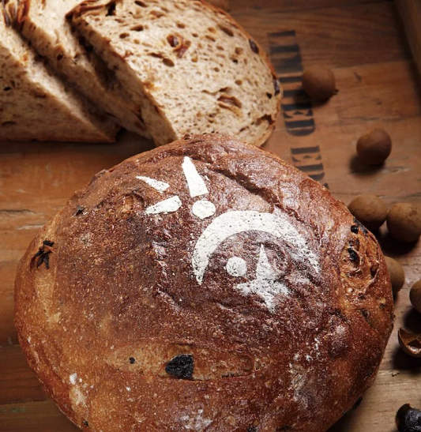
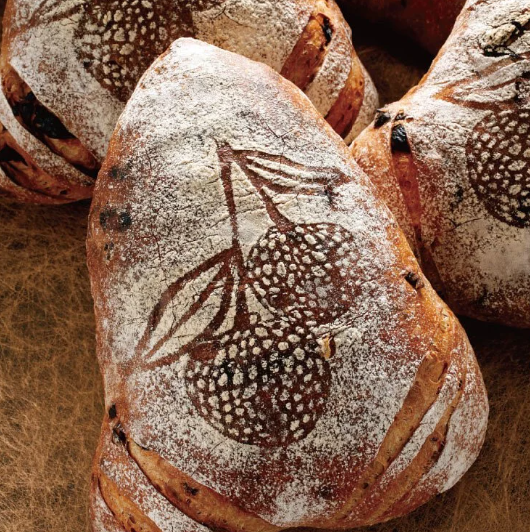
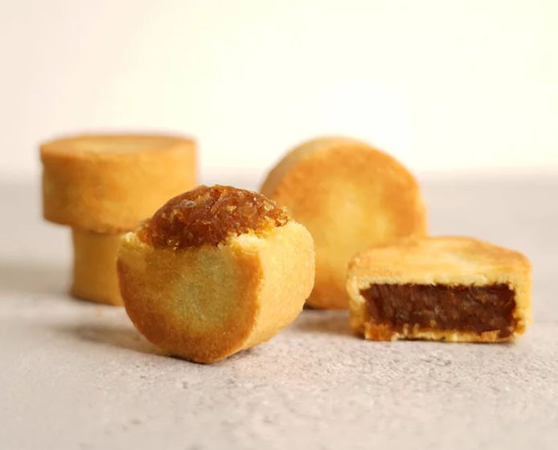

酒釀桂圓麵包【2008 世界麵包大賽亞軍作品】
台灣麵包第一次站上世界舞台 將台灣滋味注入歐式麵包 桂圓是畫龍點睛的靈魂所在, 選用的東山百年古法龍眼乾, 透過老農六天五夜不斷火燻焙而成, 融合紅酒, 胚芽及核果激盪出醇郁香氣。

荔枝玫瑰麵包【2010 世界麵包大師賽冠軍作品】
再度征服世界的味蕾的冠軍麵包 經過不斷的失敗, 不斷調整 歷時12個月鑽研的獨特層次, 麵糰需要至少15小時的發酵, 浸泡荔枝酒一夜的黑葉荔枝與玫瑰, 才能充分散發清香。 最後讓比賽評審盛讚:「吳寶春做出最好吃的歐式麵包 !」

無嫌鳳梨酥 以母親之名．重現台灣50年代的酸甜
「無嫌」是寶春師傅母親的名字 「無嫌」也是不嫌棄的意思 寶春師傅將伴隨自己長大的鳳梨 化為顆顆飽滿的鳳梨酥 紀念樂觀向前的母親 邀您感受酸中帶甜的台灣滋味 堅持100%純鳳梨的口感, 讓內餡帶有細緻纖維, 更透著金黃色澤, 來自屏東的鴨蛋黃, 讓餅皮散發懷舊香。